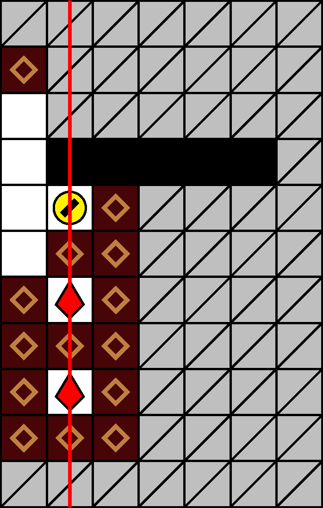
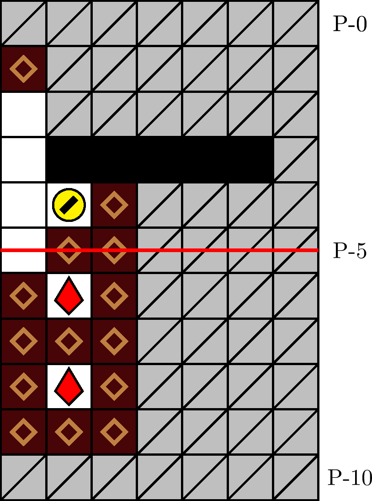

一般指針
愚形・タワー（レーザー）


指針
レーザーの出現タイミングは常に計算します．レーザーステージにおけるエリア・タワーへは，レーザーの出現タイミングと被らないよう進入します．
解説
エリア・タワーは，レーザーステージである 400 m型と 900 m型に出現し得ます（「エリア・タワー」を参照）．タワー進入から離脱までの間は犬の移動に強い制約がかかるため，この時間にレーザーが出現しないように進入タイミングを調整します．具体的には，それぞれ次のタイミングでのタワー進入が推奨されます:
- 縦レーザー:
- レーザーが −3 列または −2 列に予告された場合は，そのレーザーの消滅直後．
- レーザーが −3 列と −2 列のいずれにも予告されなかった場合は，その予告直後．
- 横レーザー:
- レーザーが P-2 行目（定型経路始点の行）以前に予告された場合は，その予告直後．
- レーザーが P-3 行目（定型経路始点の 1 つ下の行）以降に予告された場合は，そのレーザーの消滅直後．
図 3.4.7.1 と図 3.4.7.2 は，それぞれ 400 m型と 900 m型における，回避困難なレーザー出現の例です．
座標 P-(1, −3) の塊が連鎖を起こさなかった場合は，タワーの定型経路（図 3.2.1.2）の途中で離脱できるようにするため，座標 P-(6, −1) の塊を破壊し，タワーを連鎖させる方法が有効です．なお，タワー進入のタイミングと吸引リズムが適切である限り，定型経路による離脱も余裕をもって可能です．